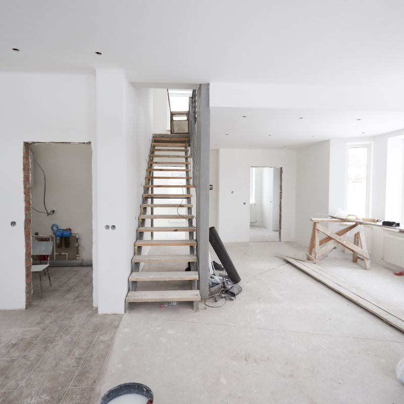

Clearer planning in Bangor
Know what needs to happen next and how your project should move from one stage to the next.
Project Management
Clearer planning and smoother coordination for extensions, loft conversions, garage conversions and home improvement projects in Bangor and nearby areas.
If you are planning an extension, loft conversion, garage conversion, bespoke garden room or home alteration, keeping everything organised can quickly become overwhelming. DM Design & Build LTD provides property project management in Bangor and nearby areas to help homeowners move forward with more clarity, better communication and a more controlled process from start to finish.
What this service solves
This service is for homeowners who want a better managed extension, conversion or renovation project, without the stress of trying to coordinate every detail alone.
What we offer
Property project management is ideal when you want your building work to feel more controlled, more transparent and less overwhelming. Whether you are planning a house extension in Bangor, a loft conversion near Menai Bridge, a garage conversion in Caernarfon, or home alterations elsewhere nearby, project management helps keep planning, communication and progress from becoming disjointed.
We help homeowners by supporting the structure behind the project. That includes practical planning, helping define the scope, keeping communication clearer, coordinating the process and monitoring progress. The aim is to make your home improvement project easier to follow and easier to move forward with confidence.

Testimonials
Replace these with your real reviews when ready.
Areas we cover
We provide property project management in Bangor and nearby parts of Gwynedd and Anglesey. If you are searching for project management in Bangor, building project management near Menai Bridge, or help managing a home improvement project in Caernarfon, we are here to help.
This service supports homeowners planning extensions, loft conversions, garage conversions, bespoke garden rooms and home alterations who want a clearer, more organised and better managed project.
FAQ
Answers to common questions about property project management in Bangor and nearby areas.
Property project management can include planning support, coordination, scheduling, communication and oversight to help keep your home improvement project clear and organised.
Yes. We help homeowners in Bangor and nearby areas manage extensions, loft conversions, garage conversions, bespoke garden rooms and home alterations.
No. We also work in nearby areas such as Menai Bridge, Caernarfon, Bethesda, Beaumaris, Llanberis, Y Felinheli and surrounding locations.
Homeowners often want clearer planning, stronger coordination, less confusion and a smoother process. Project management helps make the project easier to follow from start to finish.
You can contact us here or call 07835 827283 to discuss your project.
Plan your project with confidence
Speak to DM Design & Build LTD if you want a clearer, more organised and less stressful route through your home improvement project.
We help homeowners across Bangor and nearby areas manage extensions, loft conversions, garage conversions, garden rooms and home alterations with better planning and coordination.